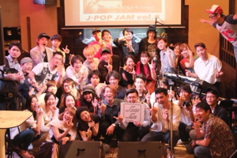
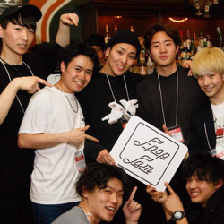

EVENT
東京で一番ポップなジャムセッション。
ジャムセッションって何？というあなたから、数々のセッション現場を渡り歩いてきたプロのバックミュージシャンまで。世代も国籍も超えて、“J-POP”をあなたのスタイルで歌い、演奏する場所。見ているだけでも一緒に歌い、踊り、盛り上がれるはず。

心が歌いたがってるんだ。
知ってる曲を一緒に口ずさんで楽しむのもよし、ドキドキしながらエントリーしてステージに立つもよし。見てるだけのつもりが心が揺さぶられて、このステージに立つことを目標に練習を続ける人も。あなたの"音楽したがってる魂"をいつでも歓迎しています。
日本の音楽シーンの入り口へようこそ。
J-POP JAMのホストメンバーは、メジャーな音楽のサポートや、東京の至るところでハイレベルなセッションを繰り広げているプロたち。ここでの繋がりがより大きな音楽コミュニティに繋がっていく。
『J-POP JAM』とは あなたの音楽活動がもっとひろがる場所。 誰もが知ってるJPOPの名曲45曲から好きな曲を選んで、 その場で一緒に演奏するイベント。 シンガーが歌いたい曲を ホストバンドと楽器奏者がサポートして演奏してもいいし、 楽器奏者がプレイしたい曲を 歌えるシンガーを募って演奏してもOK。 その場限りで生まれる [出会い]と[音楽の科学反応]をみんなで楽しもう！ 不安があってもプロのバンドが支えます。 今までありそうでなかった《JPOP限定のジャムセッション》[楽譜]も用意されているので、 腕に自信のあるミュージシャンはプロ、アマ問わず大歓迎！
次回のJ-POP JAM
2ヶ月に一度のお楽しみ！誰もが知ってるJPOPの名曲達を演奏して楽しむも良し 飲んで見て楽しむも良し 今回は、”忘年会Special”と致しまして、J-POPJAM初の [スペシャルドリンク&スペシャルフード]が登場します！ 新たなレパートリーも3曲追加が決定！ 選べる楽曲は、48曲へ！後日発表予定です！ 前回同様、英詞で歌えるJPOPもご用意してあります👍 リニューアルオープンで益々ラグジュアリーで快適になった『渋谷Under Deer Lounge』の会場でひと足早く2018年を噛みしめながら熱い夜を作りましょう😆🌈